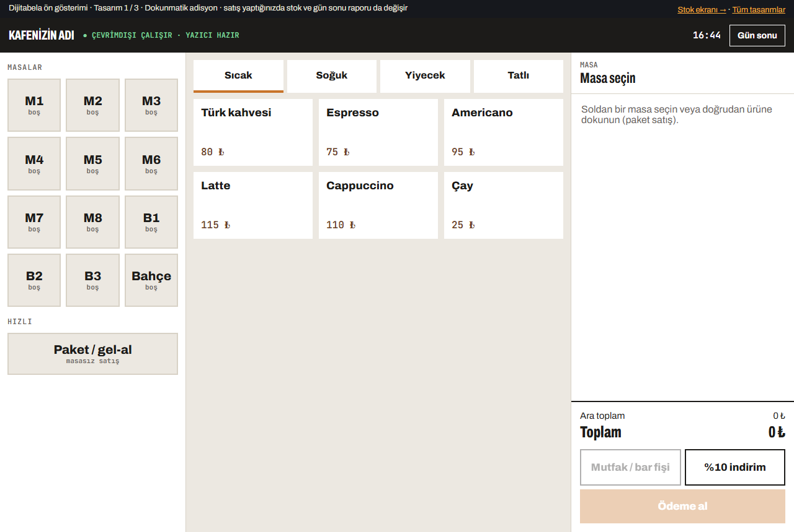
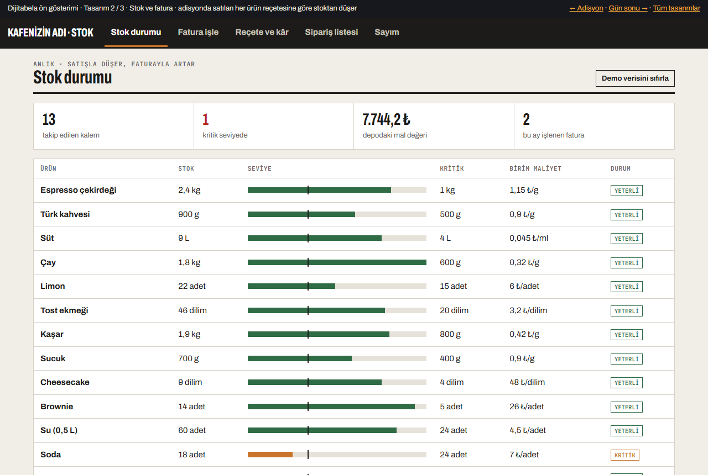
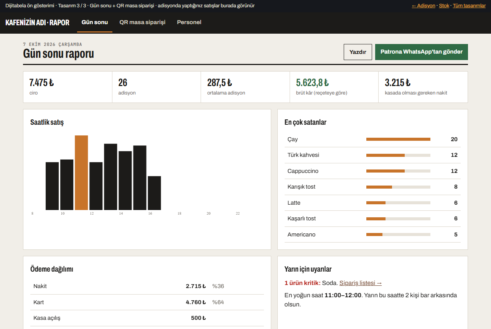

Üç ekran
Önce 1'i açıp birkaç satış yapın, sonra 2 ve 3'e bakın. Demo verileri tarayıcınızda tutulur.

1 · Dokunmatik adisyon + fiş
Parmakla kullanım için büyük butonlar. Mini PC'de tam ekran açılır.
- Masa planı, paket / gel-al
- Bar ve mutfak fişi ayrı ayrı (80 mm yazıcı)
- Nakit tuş takımı + para üstü, kart, hesabı bölme
- Stokta biten ürün kendiliğinden kapanır, "son 3" uyarısı
- İnternet kesilse de çalışır

2 · Stok + fatura
Aldığınız malın faturasını girin, stok artsın. Sattıkça reçeteye göre düşsün.
- Fatura işleme (cari takip yok, sadece stok ve maliyet)
- Fatura fotoğrafından otomatik okuma
- Reçete: hangi ürün kaç TL'ye mal oluyor, kâr marjı
- Kritik stok listesi → tedarikçiye WhatsApp sipariş
- Haftalık sayım, fire raporu

3 · Gün sonu + QR sipariş
Akşam tek ekranda günün özeti; masada QR ile sipariş.
- Ciro, adisyon, brüt kâr, kasadaki nakit
- Saatlik satış, en çok satanlar
- Raporu patrona WhatsApp'tan gönder
- Masa QR'ı: müşteri telefondan sipariş verir, adisyona aktarılır
- Personel girişleri, ikram ve iptal takibi
İstediğiniz ve bizim eklediğimiz
| Özellik | Nerede |
|---|---|
| Dokunmatik monitör ve mini PC ile uyumlu | Tüm ekranlar · büyük butonlar, tam ekran |
| Aldığımız ürün faturalarını işleyebilmek | Stok · Fatura işle |
| Cari değil stok takibi | Stok durumu · kritik seviye |
| Sipariş alınca sipariş fişi çıktısı | Adisyon · bar / mutfak fişi + adisyon fişi |
| Reçeteye göre otomatik stok düşümü + kâr marjı EKSTRA | Stok · Reçete ve kâr |
| Fatura fotoğrafından okuma EKSTRA | Stok · Fatura işle |
| Tedarikçiye WhatsApp sipariş listesi EKSTRA | Stok · Sipariş listesi |
| Gün sonu raporu + patrona WhatsApp EKSTRA | Rapor |
| QR masa siparişi EKSTRA | Rapor · QR masa siparişi |
| Sayım ve fire raporu EKSTRA | Stok · Sayım |
Kurulum uzaktan
Adana'ya gelmemize gerek yok. Sistem mini PC'nize uzaktan bağlanarak (AnyDesk) kurulur; menünüzü, fiyatlarınızı ve reçetelerinizi biz gireriz. Termal yazıcınızın modelini söylemeniz yeterli, yoksa uygun ve ucuz bir model öneririz (80 mm USB). Veriler mini PC'nizde durur, isterseniz her gece buluta yedeklenir.
Paketler
Tek seferlik ücret, aylık zorunlu ödeme yok. Fiyatlar KDV hariç, 9 Ekim 2026'ya kadar geçerli.
- Dokunmatik adisyon, masa planı
- Bar / mutfak ve adisyon fişi
- Fatura işleme, stok takibi
- Reçeteye göre stok düşümü
- Kritik stok uyarısı
- Uzaktan kurulum + menü girişi
- Adisyon + stok paketindeki her şey
- Fatura fotoğrafından okuma
- Kâr marjı, tedarikçiye WhatsApp sipariş
- Gün sonu raporu + WhatsApp
- Sayım ve fire raporu
- Personel girişi, ikram / iptal yetkisi
- Tam sistemdeki her şey
- Masa QR siparişi + garson çağırma
- Basılı QR masa kartları tasarımı
- Telefondan uzaktan rapor görme
- Her gece bulut yedeği
Nasıl ilerliyoruz?
Menünüzü gönderin, bu demoyu kendi ürünlerinizle hazırlayalım.
Alim Hoşlar · Dijitabela · 0501 945 21 84 · info@dijitabela.com